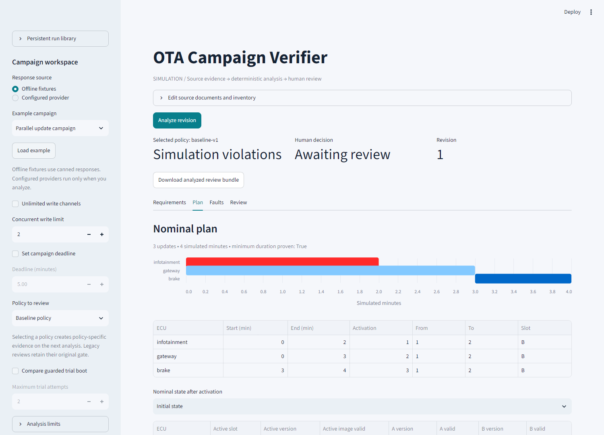
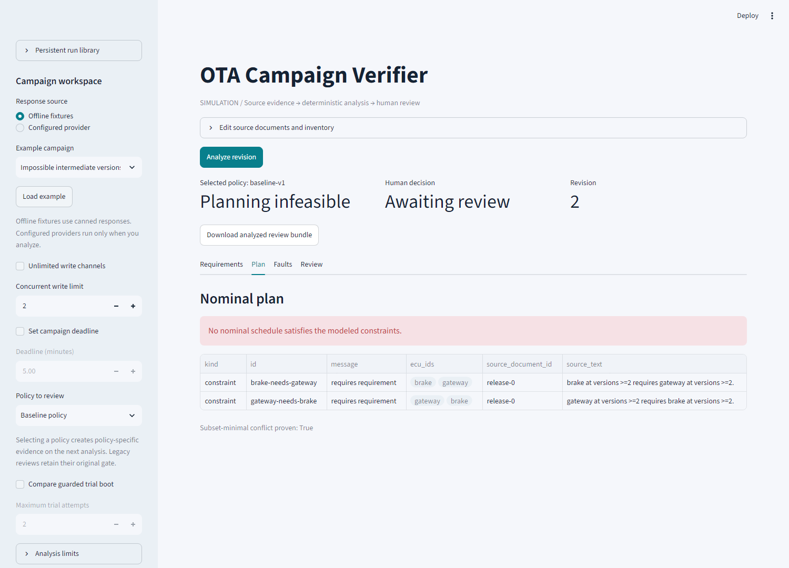
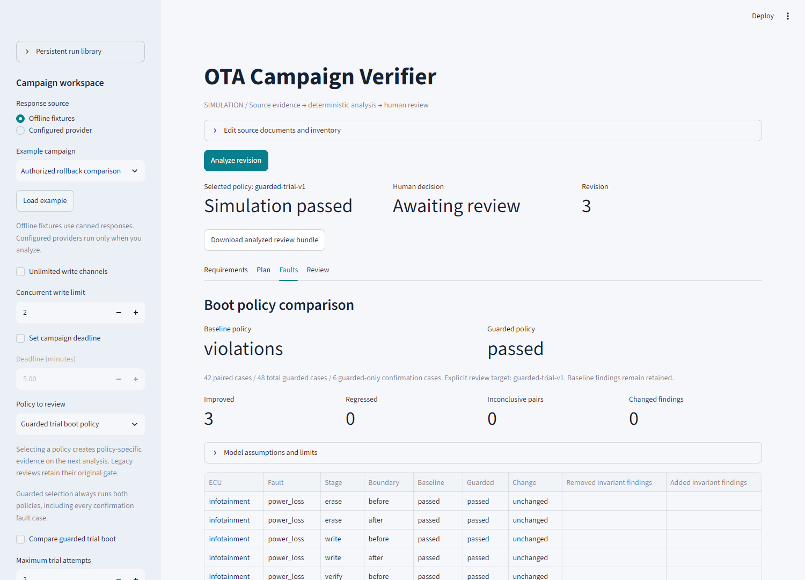

A portfolio simulation for software-defined vehicle update campaigns: extract requirements, verify their evidence, plan compatible transitions, stress-test recovery, and pause for human review.
ota-campaign-verifier.streamlit.app
Prepared from local source and recorded synthetic release evidence. Full-suite figures are historical measurements, not a new test run performed during PDF generation.
An over-the-air campaign changes a collection of ECUs rather than one isolated program. A target configuration can satisfy every version dependency even when no compatible intermediate activation order exists. A nominally feasible plan can also encounter power loss, an invalid image, or a rollback authorization barrier.
OTA Campaign Verifier investigates those differences in a bounded simulation. Its central question is whether a campaign can move through compatible states and retain an authorized route to original images after each defined single fault. The result is inspectable evidence, not merely a final pass/fail label.
| Input | Analysis product |
|---|---|
| Release notes and ECU documents | Formal constraints linked to exact source text, plus extraction findings. |
| Authoritative inventory and environment | Validated versions, slots, battery, ignition, and explicit downgrade permissions. |
| Scheduling options and selected policy | A concrete parallel schedule, source-linked contradiction, or honest unknown. |
| Fault and recovery assumptions | Complete modeled sweeps, historical invariant findings, and rollback evidence. |
| Human decision | A policy-, revision-, and hash-bound simulation-proposal record. |
| Pages | Focus |
|---|---|
| 3–7 | Scope, architecture, module boundaries, domain data, and compatibility. |
| 8–11 | Extraction, parallel planning, fault injection, guarded boot, and recovery. |
| 12–15 | Review orchestration, persistence, access, and evaluation evidence. |
| 16–20 | Worked demonstrations, operation, limitations, and source guide. |
Each ECU supplies one current and one target version. A changed ECU has one direct inactive-slot write and activation. Bridge releases, repeated updates, and atomic multi-ECU activation are outside the repertoire. These simplifications make the meaning of a solver or simulation result reviewable.
| Concern | Defined behavior |
|---|---|
| Timing | Write durations round upward to integer milliseconds. Baseline activation is instantaneous at write completion; equal-time activations have unique indices. |
| Environment | Battery and ignition remain at initial values. Waiting cannot repair a failed precondition. |
| Resources | Concurrency counts independent write channels. Shared bandwidth, power, thermal dynamics, and stochastic flash speed are not modeled. |
| Fault scope | Exactly one injected cause per run, swept over applicable ECU/stage/boundary combinations. |
| Recovery goal | Restore original active images through compatible, valid, authorized slot transitions. |
| Guarded timing | Trial, reboot, and confirmation have no elapsed-time model. Integrity, health, and availability are distinct. |
| Integration | No vehicle adapter, bootloader flashing interface, or fleet execution endpoint. |
Yellow blocks contain the only permitted model uses. Green blocks make compatibility, planning, fault, recovery, and invariant decisions in code. Invalid extraction skips planning; infeasible or unknown planning skips flash simulation and retains its diagnostic evidence.
Shared domain rules connect symbolic planning to concrete replay and invariant checking. Optional persistence retains evidence; optional access control governs workflow operations. Neither can change a constraint or convert a failing assessment into a pass.
| Module / area | Responsibility |
|---|---|
models.py | Strict immutable ECU, campaign, constraint, plan, and violation records; reference validation. |
compat.py, versions.py | One requires-state rule and validated numeric version specifications. |
planner.py, scheduling.py | Z3 feasibility/optimization, conflict shrinking, concrete schedule/state validation. |
ab.py, simulator.py, invariants.py | Baseline slot transitions, fault sweeps, and retained invariant findings. |
policy.py, recovery.py | Exact downgrade permissions and bounded paths to original images. |
boot_models.py, boot.py, boot_recovery.py, guarded_simulator.py | Guarded boot metadata, health/availability, recovery, and confirmation faults. |
boot_comparison.py | Same-plan fault pairing, guarded-only coverage, improvements, and regressions. |
llm/ | Provider boundary, extraction, source/schema checks, faithfulness, and grounded explanation. |
graph.py, workflow_models.py, evidence.py | Conditional orchestration, snapshots, facts, and human-review gate. |
persistence/, access.py, shared.py | Durable checkpoints/receipts, transactional decisions, operations, and authorization. |
review_app.py, public_demo.py, app/ | Local/shared workspace and bounded public Streamlit entry points. |
data/, evaluation.py, benchmark/, release_validation.py, tests/ | Synthetic truth, scoring, exhaustive oracles, release rehearsal, and regressions. |
Public functions use type hints and docstrings. Clients and API keys remain outside graph state. Validation failures are explicit, and the deterministic core runs without model services or credentials.
Static configuration and runtime observation are separate. ECU records hold identity, current/target versions, and flash duration. ECUState holds slot A, slot B, and active selection. Each image has a version and a modeled validity flag. VehicleState adds battery and ignition.
| Type | Meaning | Example |
|---|---|---|
| requires | Matching trigger versions require matching peer versions. | Brake ≥2 requires gateway ≥2. |
| mutex | Named ECUs must not overlap write intervals. | Gateway and brake share a channel. |
| precondition | The changed ECU needs the specified ignition and minimum battery. | Ignition off; battery at least 30%. |
| order | The earlier ECU finishes and activates before the later write starts. | Gateway before brake. |
Each constraint retains its ID, document ID, and original sentence. Extraction additionally cites a half-open character span in the immutable document. Code checks exact source segments and references instead of trusting a model-created sentence.
Requires(
id="brake-needs-gateway",
ecu="brake", version_spec=">=2",
needs="gateway", needs_version_spec=">=2",
source_document_id="release-0",
source_text="brake at versions >=2 requires gateway at versions >=2."
)A Plan retains write intervals, activation indices, slots, and the initial plus each nominal activation state. Simulation reports add actual intermediate slot contents, faults, findings, and recovery. Violations carry typed codes with ECU and source context.
A state is valid exactly when every applicable requires rule holds. Each is an implication: when an ECU matches its trigger version specification, the peer must match its required specification. All implications must hold together.
for each requires rule r:
matches(state[r.ecu], r.version_spec)
implies matches(state[r.needs], r.needs_version_spec)compat.py defines the meaning once. The planner uses the shared rule for symbolic observations; concrete replay, invariants, and recovery check real states against the same definition. This prevents scheduling and fault checking from adopting inconsistent dependency semantics.
| Observation | Gateway | Brake | Result |
|---|---|---|---|
| Initial | 1 | 1 | Compatible; ≥2 triggers inactive. |
| Activate gateway first | 2 | 1 | Invalid: gateway ≥2 needs brake ≥2. |
| Activate brake first | 1 | 2 | Invalid: brake ≥2 needs gateway ≥2. |
| Desired final state | 2 | 2 | Compatible, but no allowed first activation reaches it. |
Overlapping writes do not solve this trap. Writing inactive slots leaves effective versions unchanged; activations still execute one ECU at a time. With no atomic multi-ECU activation or bridge release, infeasibility is the correct result.
Versions/specifications are parsed numerically. An older destination requires permission matching both ECU and destination version. Merely storing an older inactive image does not authorize installation. Fallback after successful newer exposure is still a downgrade.
One abstraction, llm/client.py, supports Ollama, Gemini, or Groq selected through LLM_PROVIDER. Role-specific models are configurable. Keys come from environment/.env settings and are excluded from serialized evidence. There is no silent provider substitution.
| Stage | Control | Failure behavior |
|---|---|---|
| Extraction | Strict supported JSON; authoritative inventory and exact source segments; no hidden benchmark truth. | Malformed, unsupported, or ambiguous output blocks handoff. |
| Schema/evidence | Reject invalid fields, references, specs, duplicate JSON keys, or citation spans. | No planning campaign while unresolved findings remain. |
| Faithfulness | Separate model call reviews completeness/direction and records coverage IDs and issues. | Unfaithful or incomplete coverage blocks progression. |
| Explanation | Code-generated facts and typed outcomes; advisory text must cite them and retain mandatory summaries. | Rejected/unavailable prose falls back to deterministic summaries. |
Separate calls, even with different models, do not guarantee independence or correctness. Evaluation perturbations deliberately make both scripted passes omit or misstate a rule to expose correlated false acceptance.
The planner assigns integer start/end times and a unique activation index to each changed ECU. It enforces duration, channel capacity, mutex, order, environment, image validity, exact downgrade permissions, and version requirements. Initial and every ordered post-activation state must be compatible.
| Rule | Meaning |
|---|---|
| Overlap | Nonpreemptive half-open write intervals; an end can equal another start without overlap. |
| Activation | At write completion; equal-time transitions execute in unique index order. |
| Order | Before ECU completes and activates before after ECU starts writing, not just before its activation. |
| No-op ECU | Equal numeric current/target versions need no flash step but remain in compatibility observations. |
| Objective | Minimize makespan; prefer earlier starts/activation indices where the remaining budget permits tie-breaking. |
| Validation | Concrete schedule checks and state replay validate every published feasible plan. |
Conflict shrinking seeks a subset-minimal core: removing any reported group makes that subset satisfiable relative to the fixed transition model. It is not necessarily a minimum-cardinality conflict. Budget-limited shrinking preserves the proved core without falsely claiming minimality.
The baseline simulator records actual slot contents and flash events. The previous active image continues running during inactive-slot erase/write/verify. Activation changes selection; faults can leave incomplete or invalid images that stay visible in the trace.
| Fault | Applicable injection point / effect |
|---|---|
| Power loss | Before and after erase, write, verify, activate, and boot: ten cases per ECU. All writes in progress are affected, not only the addressed ECU. |
| Write corruption | After write; the candidate cannot be treated as a verified valid target. |
| Verification failure | Before verify; the unverified target is not activated. |
| Activation failure | Before activation; the intended switch fails under defined baseline semantics. |
| Boot failure | Before boot; baseline can expose an invalid active image, producing a historical violation. |
The sweep contains 14 single-fault cases per planned ECU. Reports validate expected coverage, unique causes, campaign identity, nominal completion, and consistency between findings and assessment. A truncated sweep cannot be labeled passed.
| Invariant | Checked property |
|---|---|
| bootable_image | An active boot selection references an image marked valid. |
| compatible_versions | Effective installed versions satisfy the shared requires rule. |
| authorized_downgrade | Older effective installations/fallbacks have exact explicit permission. |
| rollback_path | A failed step has a proved compatible route to original images, or reports a violation/unknown as appropriate. |
Each finding retains the invariant, typed violation, ECU/source information, and trace index. Trace snapshots show time, flash stage, active slots, image validity, and simultaneous write activity. Reviewers can therefore inspect the transition behind a failure.
The guarded policy separates integrity, boot health, availability, and durable confirmed-slot metadata. A candidate becomes effective only after its boot-health check succeeds. A failed never-effective trial retains the current version; fallback after successful newer exposure still checks downgrade authorization.
Confirmation is atomic in this model. Confirmed selection, observed health, and attempt count survive power loss; volatile runtime/candidate selection does not. Two confirmation power-loss boundaries increase guarded coverage to 16 cases per changed ECU.
Recovery searches known stored images and legal slot/runtime transitions to restore the original running confirmed configuration. Baseline recovery uses bounded breadth-first state search. Guarded recovery additionally respects health, confirmed metadata, trial limits, and peer availability. A search cap yields unknown, not an invented path.
LangGraph builds the conditional pipeline with StateGraph, nodes/edges, a checkpointer, and interrupt_before=["human_review"]. Normal stages are extract → plan → simulate → optional compare_policies → explain → prepare_review → human_review. Blocked extraction and nonfeasible planning route to explanation/evidence without executing later analysis stages.
State is serialized data. Provider clients and keys are injected outside checkpoints. A process lock serializes workflow planning because Z3’s default context is shared. The human-review service checks run, revision, snapshot hash, eligibility, and idempotency.
| Review mode | Eligibility source | Schema |
|---|---|---|
| Legacy selection omitted | Original baseline gate; an enabled guarded comparison must also pass. | workflow-v1 / review-bundle-v1 |
| Explicit baseline-v1 | Complete passing baseline nominal and fault evidence. A comparator cannot approve a failing baseline. | workflow-v2 / review-bundle-v2 |
| Explicit guarded-trial-v1 | Complete passing guarded nominal and fault evidence, including confirmation cases. Baseline failures remain retained. | workflow-v2 / review-bundle-v2 |
The snapshot includes inputs, extraction, planning, simulation/comparison, facts, explanation, and rules. Its hash also binds run and revision. Changing source, policy, options, or permissions needs a new analysis revision. Prior decisions remain in history but no longer apply to the new proposal.
WorkflowService uses in-memory checkpoints by default. PersistentWorkflowService optionally stores registry, immutable revisions, public client recipes, model-response receipts, snapshots/decisions, and LangGraph checkpoints in one local SQLite database. WAL, full synchronous writes, and short transactions support local durability.
| Interruption boundary | Required behavior |
|---|---|
| Before a request | Commit request intent before contacting a provider. No SQL transaction spans a network call. |
| Response saved; node not checkpointed | Replay the exact saved response instead of calling the provider again. |
| Inflight or uncertain outcome | Stop automatic retry: the provider might have completed remotely. An explicit new revision is required. |
| Decision committed; graph checkpoint lagging | SQL decision stays authoritative. Reopening shows it without duplicate approval. |
| Uncommitted SQL decision | Rollback leaves no invented completed review. |
| Changed runtime or corrupted evidence | Refuse incompatible execution/new decisions; supported completed history remains readable. |
Request, input, recipe, snapshot, and version hashes detect accidental edits. Reconstruction recipes retain public settings or labeled fixture payloads, never API keys. A resumed uncached live role checks current public settings and reads credentials outside checkpoint state.
| Surface | Capabilities | Trust / lifetime |
|---|---|---|
| Local workspace | Editable source, fixture/live clients, scheduling options, optional durable library, self-reported review. | Trusted local operator; memory or explicit SQLite. |
| Shared single-host mode | Streamlit-verified OIDC issuer/subject and server allowlist with reader, analyst, reviewer, admin grants. | Protected configuration; checks per operation and again at review commit. |
| Public portfolio demo | Predefined synthetic cases, policy choice, 1–3 write channels, evidence download, session review. | No provider settings, uploads, arbitrary editor, or filesystem library. Eight analyses per session. |
Shared review overrides typed names with authenticated identity. Role provenance commits atomically with the SQL decision. Readers cannot analyze/review; analysts cannot review without an additional grant. Unknown, revoked, and expired accounts are denied. Host operators with source/database access remain trusted.
Authenticated portable exports use persistent-review-v2 and bind issuer/subject provenance to matching decisions. Historical self-reported names are never relabeled authenticated. Export IDs content-address the full envelope; they are not signatures.
https://ota-campaign-verifier.streamlit.app/
The repository records this user-provided Streamlit Community Cloud URL. A previous check returned HTTP 200, but automated interactive rendering was not verified. This report performs no new uptime or live-SSO check.
Public entry: app/public_demo.py. Local/shared entry: app/streamlit_app.py. Root requirements.txt installs the src-layout package. Actual secrets, .env, virtual environments, local state, and runtime databases are excluded from publication.
Synthetic cases are ground truth first and messy text second. A frozen corpus adds separate development/held-out wording templates, canonical hashes, and required-abstention labels. Hidden gold enters scoring, never extraction/verification prompts.
| Measure | Definition / interpretation |
|---|---|
| Per-type precision/recall | Normalized semantic multisets, accumulated per case. IDs/wording ignored; duplicates, omissions, and extra meanings are errors. |
| Exact source spans | Match meaning plus document and offsets. Accuracy conditions on semantic matches; precision/recall penalize extra/missing constraints too. |
| Schema rejection | Invalid strict JSON/schema among received extraction responses. Transport failures and citation failures are distinct. |
| Faithfulness false acceptance | Faithful judgments on bad drafts / reviewed bad drafts. Empty denominators are null, not perfect accuracy. |
| Downstream effects | False acceptance/infeasibility, unknowns, missed fault violations, and underlying case evidence. |
| Reproducibility | Corpus, prompts/configuration, runtime/code fingerprints, raw outputs, and latency. Semantic digest excludes timing. |
An independent bounded oracle enumerates starts/activation orders without Z3 or production schedule validation; compat.py intentionally remains shared. Scope: at most three monotonic 1-to-2/no-op ECUs, one/two-minute writes, integral-minute deadlines. Metamorphic tests check reordering, ID changes, capacity/deadline relaxation, and permission effects.
| Recorded local observation | Qualification |
|---|---|
| 548 passed; 0 failures; 0 errors | Release full suite: Windows / Python 3.14.4; 14 upstream/cache warnings. |
| 11/11 deterministic checks; 252 core fault cases | Frozen reference benchmark. |
| 12 extraction fixtures: 8 ready, 4 abstentions | Canned-response regression, not live-model performance. |
| Windows/Linux, Python 3.11–3.14 CI matrix | Configured; no passing remote result asserted by the release record. |
Source: docs/release-evidence.json and eval/baseline_v1.json. Later targeted UI/hosting tests are separate. PDF generation does not rerun or imply a newer full-suite result.

The UI fixture performs six ECU-minutes of writing in four simulated minutes with two channels. Infotainment overlaps gateway; brake waits for its dependency. The initial and every activation state are compatible. The overall baseline assessment still contains fault violations, separating nominal planning from resilience.

Both target versions are compatible together, but each new version requires the other ECU already updated. Either first activation violates a dependency. Since one-at-a-time activation is part of this model, there is no feasible route.
Both source rules and IDs remain visible. Removing either rule makes the reported subset satisfiable relative to the fixed model. The tool does not silently drop a requirement or invent atomic activation to manufacture a successful plan.

Authorized rollback compares 42 shared fault causes and adds six confirmation faults, giving 48 guarded cases. Its guarded sweep passes under the stated assumptions; the baseline keeps its violations. Three paired boot-failure outcomes improve; this example has no paired regressions.
Original-version permissions are explicit synthetic input. Removing them or adding dependency-availability cycles can block guarded recovery. The result supports only the selected policy and modeled assumptions, not a blanket claim about OTA updates.
python -m venv .venv .\.venv\Scripts\python -m pip install -e ".[dev]" .\.venv\Scripts\python -m streamlit run app/streamlit_app.py
Load example replaces draft source/inventory and matching fixture selection. A pre-render callback confirms loading and opens the editor. Chosen policy/limits stay; analysis does not run automatically. Analyze revision explicitly before reviewing changed inputs.
.\.venv\Scripts\python -m ota_verifier.cli examples/parallel_campaign.json --max-parallel 2 .\.venv\Scripts\python -m ota_verifier.benchmark.runner --mode core --fail-on-findings .\.venv\Scripts\python -m pytest -q
.\.venv\Scripts\python -m ota_verifier.release_validation --output runs/my-release
The builder checks three demo stories and rehearses migration, pause/resume, exact response reuse, live-WAL backup, and equality after restore. JSON reports, databases/manifests, and a SHA256 artifact index go to a new directory. No human approval is fabricated. Local checks can pass while external release gates stay pending.
.\.venv\Scripts\python -m ota_verifier.persistence.operations verify .ota_state/reviews.sqlite .\.venv\Scripts\python -m ota_verifier.persistence.operations backup .ota_state/reviews.sqlite --destination .ota_state/backup.sqlite
Restore into a new path. Shared mode additionally needs explicit migration, protected OIDC settings, and a server allowlist. Do not publish credentials or use a free public session as a persistent evidence archive.
Conclusions depend on correct extraction, supplied inventories, bounded transitions, and complete modeled coverage. Two model calls can agree on the same error. Schema validity is not semantic truth; human review and independent evaluation remain necessary.
Complete external CI and identity checks first, then evaluate independently reviewed representative documents. Resource-aware timing, bounded availability, bridge-release proposals, and fleet simulation are possible extensions after their semantics and regression criteria are defined; they are not presented as implemented.
| Source | Purpose |
|---|---|
| README.md; docs/architecture.md | Overview, measured examples, and system boundaries. |
| docs/phase4.md–phase6.md | Extraction, workflow, guarded boot, and comparisons. |
| docs/phase7.md–phase10.md | Persistence, metrics, policy-specific reviews, shared access, operations. |
| docs/phase11.md; docs/release-evidence.json | Recorded release artifacts, measurements, and external gates. |
| docs/deploy_free.md; docs/demo_walkthrough.md | Hosting URL, bounded demo, and walkthrough. |
| src/ota_verifier/; tests/; eval/ | Implementation, exhaustive/regression checks, and baselines. |
Glossary: ECU = electronic control unit; OTA = over-the-air; SDV = software-defined vehicle; A/B = alternate image slots; SAT/UNSAT = satisfiable/unsatisfiable; OIDC = OpenID Connect; WAL = write-ahead log. Prepared 6 November 2026 from local source and recorded synthetic evidence.